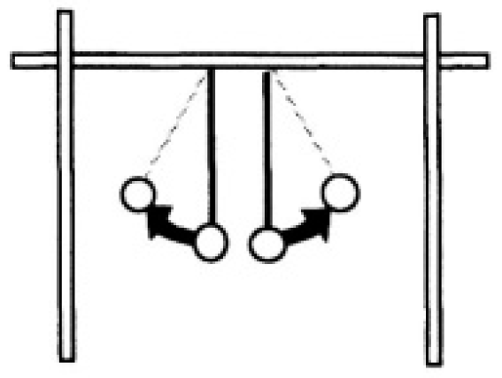
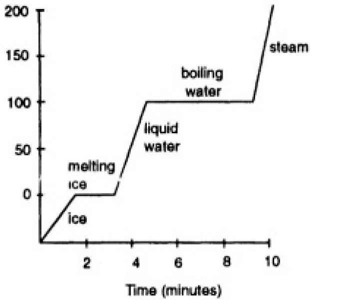
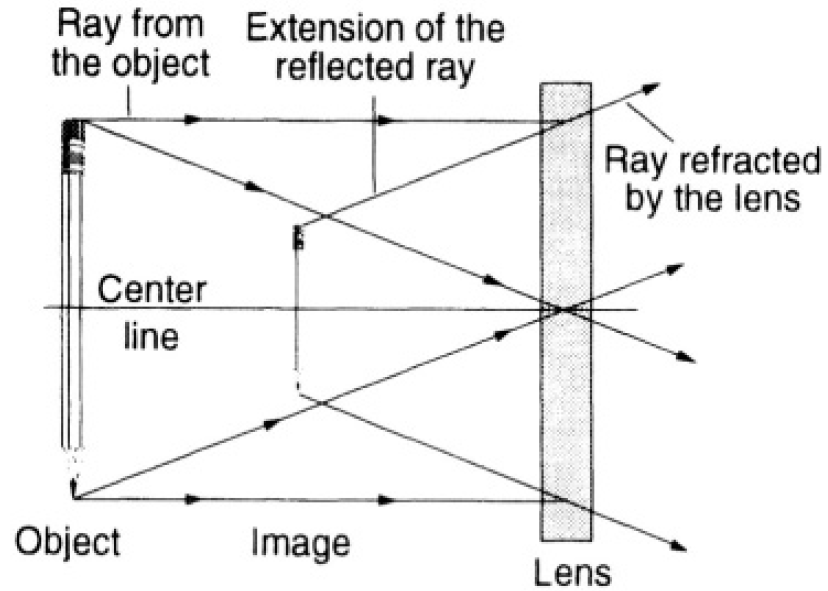
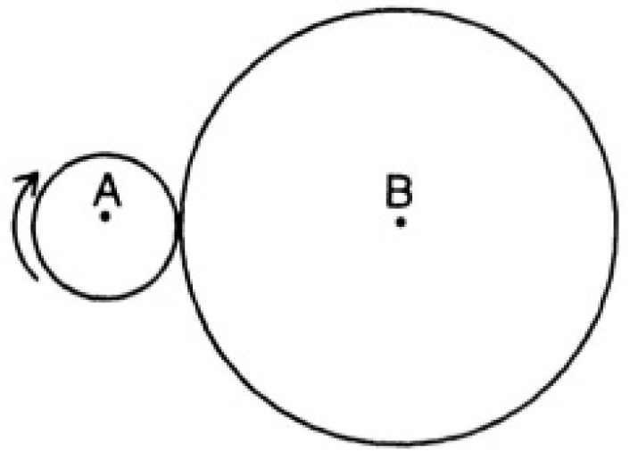

7 Osterlind (2002)
7.1 The importance of good writing in test items
All wordsmiths—novelists, essayists, students, teachers, researchers, journalists, and others—know firsthand that writing is difficult. It requires a thorough familiarity with the subject, proficiency in language mechanics (e.g., grammar, spelling, and punctuation), and careful contemplation of the words used. Of course, a writer’s unique style is important. In item writing, style must include an emphasis upon clear, terse language. Review and rewriting is usually needed, sometimes even three, four, or five times, before clarity of expression is achieved. Further, technical writing—such as preparing test items—is especially difficult because it demands an extraordinarily high degree of precision in language use.
In a test item, every word counts. The item writer, unlike the novelist or essayist, cannot rely upon a larger context to assist in conveying the meaning of a word, sentence, or passage. Subtleties of expression are rarely possible in the brief wording of most test items. The examinee must derive from the sentence stem the exact meaning intended by the item writer, and in the response alternatives the examinee should be able to realize distinct and reasonable solutions. Communication between the item writer and the examinee is crucial if a measure of the particular construct is to yield valid score interpretations.
The stem for most items consists only of a single sentence, which must present examinees with a specific problem or situation that demands a particular response. By its very brevity, there is little room for ambiguity in wording. It should not include superfluous or irrelevant words. Tautologies, repetitious phrasing, and words with plural meanings should be avoided. And, of course, the punctuation must be technically correct.
Writers refer to these elements of writing, and the myriad other ingredients of style, as language mechanics, syntax, and diction. Language mechanics refers to uniform use of punctuation, citations, and other editorial rules, whereas syntax is the arrangement of the words in a sentence, paragraph, or passage to achieve clarity of expression. Diction is the choice of the precise word that most clearly communicates an intended meaning. When preparing an item, writers should scrupulously follow the rules of writing included in good mechanics, syntax, and diction. Some sources for standard elements of style are cited in a later section of this chapter.
One overarching rule for good writing in a test item’s stem is the simple old dictum, repeatedly told to many of us by a caring teacher in our early days of learning how to write effectively: “Specific is terrific!” Its meaning is self-evident, but implementing it is another, and very difficult, thing. Regardless of the difficulty of achieving specificity in writing an item’s stem, this rule should always be the guide.
In addition to precision, other aspects of language must be considered when preparing test items. Item writers, like all human beings, can inadvertently contaminate their writing with stereotypical, prejudicial, or biased language. Although usually unintended, such offensive language can distract examinees from the problem presented in the item. While it is appropriate to express one’s opinions and feelings in some types of writing (editorial writing, for example), there is no place for opinion or evocative language in a test item. The vigilant item writer will carefully avoid all offensive words and phrases.
Correct use of language in an item’s response alternatives is just as important as in the stem. While some specialized rules of editorial style are prescribed for an item’s response alternatives—for example, when to use incomplete sentences (these rules are described in Chapter 5 for items in the multiple-choice format, in Chapter 6 for items in alternative formats like constructed-response and performance items, and Chapter 7 in other traditional formats, like true-false and matching)—the language mechanics, syntax, and diction should always promote clarity of expression. And, of course, the grammatical construction of the response alternative should be consistent with the leading stem.
Some examples will help to reinforce the importance of good writing in test items. First, consider an item that is not well written, Illustrative Item 4.1. This item contains wording that is ambiguous, making it difficult for examinees to respond. The phrase (used as a verbal) in the stem is to proceed, but given the context, it is imprecise as to whether it refers to Ted’s dilemma about his broken-down car, or his problem in getting to work. If one surmises that the intention of the item is to address Ted’s automobile dilemma, then response B could be selected because it is the only response alternative that offers Ted a solution to his car problems. If, however, one construes the stem’s question as referring to Ted’s alternatives for getting to work, then any of the response alternatives could be selected with equal justification. This ambiguity is the result of imprecise wording.
Further, Illustrative Item 4.1 contains unacceptable wording beyond the imprecision already described in the stem. Several of the response alternatives also contain imprecise wording. For example, alternative C is grossly inadequate as a plausible distractor because the wording is too vague for an examinee to deduce anything from it. And, response alternative D needs a referent for the comparative form: e.g., “using public transportation because it is cheaper than fixing-up Ted’s old car.” Without doubt, Illustrative Item 4.1 is poorly worded, and it does demonstrate the importance of precise wording to test items by showing the confusion and errors that can result when items are not well written.
| Illustrative Item 4.1 |
|---|
| Ted Sullivan’s old car just broke down, and it will cost a great deal to repair. He must have a car to get to work each day. Which would be the best way for Ted to proceed? |
| A. finding a cheap used car quickly B. fixing the old car because new cars cost a lot of money C.thinking carefully about his transportation needs D.using public transportation because it is cheaper |
There are any number of ways to improve the wording for Illustrative Item 4.1. One improved version is given in Illustrative Item 4.2. Juxtapose this wording with the earlier version. Immediately one senses that with the improved wording, the accuracy of measurement is improved.
| Illustrative Item 4.2 |
|---|
| Ted Sullivan’s old car just broke down, and he has discovered that it will cost more money to repair than he has available for that purpose. He must have a car to get to work each day. Which would be the best way for Ted to get to work tomorrow? |
| A. walk to work B. buy a new car C. arrange to get a ride with a co-worker D. fix the old car regardless of how much it costs |
Illustrative Item 4.3 is another example of imprecise wording in test items, but in this example the faulty wording creates a different situation than was presented in Illustrative Item 4.1. In 4.3, the problem is that the response alternatives do not directly address the item’s question in a significant way. Study the ambiguities in this item.
Illustrative Item 4.3 can be repaired in a number of ways. First, the information presented in the stem’s initial sentence should be directly tied to the question. One fix for this could be to combine sentences one and two as follows: “Mr. Ray is considering using his $30,000 in savings to buy the grocery store where he works. What is Mr. Ray’s most likely result if he purchases the store?”
The problem with the response alternatives is, of course, that there is insufficient information to select one among them as “most likely.” Alternatives A, B, and D could each result.
| Illustrative Item 4.3 |
|---|
| Mr. Ray has $30,000 in savings. He wants to buy the grocery store where he works. If he buys the store, which result is most likely? |
| A. He could either make money or loose money. B. He will probably double his investment within a year. C. He will probably loose money and go out of business. D. He will make more money than he does by working there for someone else. |
Response alternative C is so imprecise as to provide no useful information for either selecting or rejecting it. The item is poorly constructed and should be discarded or rewritten entirely.
These examples illustrate the importance of unambiguous, well-considered wording for test items. The careful item writer should use full diligence to ensure clarity of expression in test items. Strategies to improve writing in particular item formats will be addressed in the following section, as well as elsewhere in this chapter and in Chapters 5, 6, and 7.
7.2 Using taxonomies in writing items
It was explained in Chapter 3 that despite the popularity of using Bloom’s taxonomy of educational objectives to categorize test items into levels of increasingly complex cognitive processing, the actual practice of writing items that tap the higher cognitive functioning levels is very difficult. To facilitate the instrumentation of the taxonomy at the more advanced levels of Bloom’s taxonomy, several writers offer lists of verbs and direct objects useful for writing sentence stems which could be used to elicit examinee responses at particular levels. One such list, by Metfessel, Michael, and Kirsner (1969), is presented in Table 4.1. Of course, to comprehend the information presented in the table one must understand the cognitive levels cited along the left column.
This information is provided in Chapter 3 in the section titled “Identifying Levels of Cognitive Processing.” The numbering system used in Table 4.1 parallels Bloom’s numbers. This table can be extremely helpful to item writers by prodding their thinking and illustrating relationships. For example, notice in Table 4.1 the examples of verb infinitives and direct objects for sentence stems. The examples offered at the lowest level, Knowledge, are self-evident. For verbs, some offerings are to define, to distinguish, to recall, and to identify; and, for direct objects, some examples are terms, facts, and properties.
Item writers need not necessarily employ the specific words from the list; rather, they will find the actions required by the suggested verbs and direct objects as appropriate to assessing a particular level of cognitive function. This point can be seen by studying several items. For example, writing test items at the lowest level, Knowledge, could be a classifying activity, such as placing events in chronological order. Illustrative Item 4.4 exhibits an item at this very low level of cognitive functioning.
Most items at the Knowledge level require only rote memory and seldom present novel ideas to examinees. Still, such items can be extremely useful for measuring particular facts. This kind of item is very common on tests of academic achievement as well as on licensing and certification examinations. It also represents the kind of low-level cognitive tasks requested of examinees by many novice item writers.
While such low-level items are popular and useful, they are also limiting. The inferences yielded about examinee performance are typically restricted to a given set of factual information. These items reveal almost nothing about an examinee’s level of cognitive functioning. To garner evidence for this sort of information, the item writer must move into the higher levels of the taxonomy.
| Illustrative Item 4.4 |
|---|
| Which event occurred first? |
| A. Civil War B. American Revolution C. abolishing of slaver D. writing of the constitution |
Table 4.1 Instrumentation of the Taxonomy of Educational Objectives: Cognitive Domain
| Key Words | ||
|---|---|---|
| Taxonomy Classification | Examples of Infinitives | Examples of Direct Objects |
| 1.00 Knowledge | ||
| 1.10 Knowledge of Specifics | ||
| 1.11 Knowledge of Terminology | to define, to distinguish, to acquire, to identify, to recall, to recognize |
vocabulary, terms, terminology, meaning(s), definitions, referents, elements facts, factual information, |
| 1.12 Knowledge of Specific Facts | to recall, to recognize, to acquire, to identify |
(sources), (names), (dates), (events), (persons), (places), (time periods), properties, examples, phenomena |
| 1.20 Knowledge of Ways and Means of Dealing with Specifics | ||
| 1.21 Knowledge of Conventions | to recall, to identify to recognize, to acquire |
form(s), conventions, uses, usage, rules, ways, devices, symbols, representations, styles(s), format(s) |
| 1.22 Knowledge of Trends, Sequences | to recall, to recognize, to acquire, to identify |
action(s), processes, movement(s), continuity, development(s), trend(s) sequence(s), causes, relationship(s), forces, influences |
| 1.23 Knowledge of Classifications and Categories | to recall, to recognize, to acquire, to identify |
area(s), type(s), feature(s), class(es), set(s), division(s), arrangement(s), classification(s), category/categories |
| 1.24 Knowledge of Criteria | to recall, to recognize, to acquire, to identify |
criteria, basics, elements |
| 1.25 Knowledge of Methodology | to recall, to recognize, to acquire, to identify |
methods, techniques, approaches, uses, procedures, treatments |
| 1.30 Knowledge of the Universals and Abstractions in a Field | ||
| 1.31 Knowledge of Principles, Generalizations | to recall, to recognize, to acquire, to identify |
principle(s), generalization(s) proposition(s), fundamentals, laws, principal |
| 1.32 Knowledge of Theories and Structures | to recall, to recognize, to acquire, to identify |
theories, bases, interrelations, structure(s), organization(s), formulation(s) |
| 2.00 Comprehension | ||
| 2.10 Translation | to translate, to transform, to give in own words, to illustrate, to prepare, to read, to represent, to change, to rephrase, to restate |
meaning(s), sample(s), definitions, abstractions, representations, words, phrases |
| 2.20 Interpretation | to interpret, to reorder, to rearrange, to differentiate, to distinguish, to make, to draw to explain, to demonstrate |
relevancies, relationships, essentials, aspects, new view(s), qualifications, conclusions, methods, theories, abstractions |
| 2.30 Extrapolation | to estimate, to infer, to conclude, to predict, to differentiate, to determine, to extend, to interpolate, to extrapolate, to fill in, to draw |
consequences, implications, conclusions, factors, ramifications, meanings, corollaries, effects, probabilities |
| 3.00 Application | to apply, to generalize, to relate, to chose, to develop, to organize, to use, to employ, to transfer, to restructure, to classify |
principles, laws, conclusions, effects, methods, theories, abstractions, situations, generalizations, processes, phenomena, procedures |
| 4.00 Analysis | ||
| 4.10 Analysis fo Elements | to distinguish, to detect, to identify, to classify, to discriminate, to recognize, to categorize, to deduce |
elements, hypothesis/hypotheses, conclusions, assumptions, statements (of fact), statements (of intent), arguments, particulars |
| 4.20 Analysis of Relationships | to analyze, to contrast, to compare, to distinguish, to deduce |
relationships, interrelations, relevance, relevancies, themes, evidence, fallacies, arguments, cause-effect(s), consistency/consistencies, parts, ideas, assumptions |
| 4.30 Analysis of Organizational Principles | to analyze, to distinguish, to detect, to deduce |
form(s), pattern(s), purpose(s) point(s) of view(s), techniques, bias(es), structure(s) theme(s), arrangement(s), organization(s) |
| 5.00 Synthesis | ||
| 5.10 Production of a Unique Communication | to write, to tell, to relate, to produce, to constitute, to transmit, to originate, to modify, to document |
structure(s), pattern(s) product(s), performance(s), design(s), work(s), communications, effort(s), specifics, composition(s) |
| 5.20 Production of a Plan, or Proposed Set of Operations | to propose, to plan, to produce, to design, to modify, to specify |
plan(s), objectives, specification (s), schematic(s), operations way(s), solution(s), means |
| 5.30 Derivation of a Set of Abstract Relations | to produce, to derive, to develop, to combine, to organize, to synthesize, to classify, deduce, to develop, to formulate, to modify |
phenomena, taxonomies,concept(s), scheme(s), theories, relationships, abstractions, generalizations, hypothesis/hypotheses, perceptions, ways, discoveries |
| 6.00 Evaluation | ||
| 6.10 Judgments in Terms of Internal Evidence | to judge, to argue, to validate, to assess, to decide |
accuracy/accuracies, consistency/consistencies, fallacies, reliability, flaws, errors, precision, exactness |
| 6.20 Judgments in Terms of External Evidence | to judge, to argue, to consider, to compare, to contrast, to standardize, to appraise |
ends, means, efficiency, economy/economies, utility, alternatives, courses of action, standards, theories, generalizations |
7.2.1 Writing Items at the Higher Taxonomic Levels
Continuing with the examples of verbs and direct objects for sentence stems presented in Table 4.1, examine another test item, this time at the level of Analysis. According to Bloom’s taxonomy of cognitive processing levels, Analysis is the fourth highest of six processing-level categories. Illustrative Item 4.5 displays an item which may elicit this level of cognitive functioning from examinees.
In this item, the examinee is required to classify the elements of the paragraph and deduce the missing organizational characteristic. As one can readily realize, comparing elements of correct English composition and discovering interrelationships are necessary to arrive at a correct response to the item. The examples of verb infinitives and direct objects presented in Table 4.1 suggest these activities for this level of cognitive skill.
Next, examine Illustrative Item 4.6, which draws upon a still higher taxonomic level, Evaluation. This item is from a test used to license paramedics for practice in the field in emergency situations where evaluation and judgment are needed. The item requires one to analyze the internal evidence of a given medical situation, synthesize the information structures, and form an evaluative judgment.
In sum, one is required to use all of the cognitive processes, including the highest taxonomic level delineated by Bloom, Evaluation, to solve this rather complex problem. Again, notice that Table 4.1 can offer the expert item writer suggestions for preparing items that tap this taxonomic level.
| Illustrative Item 4.5 |
|---|
| It was my first camping experience and I wanted to prove that I could do my share. The leader assigned each of us to a group. My group first unpacked the tents and camping equipment. Next, we put up the tents and set out the necessary equipment for preparing dinner. What characteristic is not evident in this paragraph? |
| A. logical sequence B. effective sentence C. concluding sentence D. related supporting details |
| Illustrative Item 4.6 |
|---|
| A 45-year-old male, weighing 220 pounds, complains of severe substernal chest pain. Oxygen has been started and an IV line established. The patient suddenly becomes unresponsive and the monitor shows ventricular tachycardia. There is no carotid pulse palpable. What treatment is indicated at this time? |
| A. Defibrillate at 300 joules. B. Administer lidocaine (Xylocaine). C. Administer sodium bicarbonate. D. Perform synchronized cardioversion. |
7.2.2 Independence of Subject Matter from Cognitive Processing Level
Another important consideration if one wishes to use Table 4.1 for constructing test items is that the subject content for items will vary in sophistication independent of the level of cognitive processing required of examinees to elicit a correct response. In other words, the two considerations for determining the content for a test item—subject matter and level of cognitive processing—are independent. Low cognitive-processing-level items may include very simple content or they may include rather sophisticated content. Conversely, an item designed to assess complex processing skills may be contextually set in either simple or complicated subject matter.
It is a common mistake to presume that every low-level cognitive skill yields a very simple-minded item. To illustrate the point, consider Illustrative Item 4.7 which contains rather sophisticated subject content but requires only a low level of cognitive processing.
| Illustrative Item 4.7 |
|---|
| What does it mean for an individual to apply for a writ of habeas corpus? |
| A. person who has been arrested may refuse to submit to a body search. B. A person in jail may ask to be taken before a judge, who will decide if he is being held lawfully. C. A person has the right to say what he believes without any penalty. D. A person may worship with others without interference by the state. |
Or, examine two more items, one designed for third graders and another designed for tenth grade students, Illustrative Items 4.8 and 4.9. Note particularly that while the content of the items is very different—each appropriate to the intended audience—they both require from their respective examinees a similar level of cognitive processing, in this case, Evaluation, or level 6, the highest level in Bloom’s system of classifying cognitive skills.
| Illustrative Item 4.8 |
|---|
| A newly built bridge connects the cities of Greenwood and Saxton. What change is likely to happen in Saxton because of the new bridge? |
| A. The gas stations in Saxton will close. B. All the people of Saxton will move to Greenwood. C. More people from Greenwood may shop in Saxton. D. Mail service will stop between Saxton and Greenwood. |
| Illustrative Item 4.9 |
|---|
| Read the following paragraph (from the Mayflower Compact) and answer the question below. “We combine ourselves together into a civil body politick for our better ordering and preservation … and do enact … such just and equal laws . . . as shall be thought most convenient for the general good of the colony, unto which we promise all due submission and obedience.” Which principle of government is described in this quotation? |
| A. equal opportunity for all B. importance of religious freedom C. submission and loyalty to the king D. obedience of the community’s laws |
The item intended for third graders, Illustrative Item 4.8, requires evaluation from children of normal development who are about eight or nine years old. It may not require such complex cognitive processing for an adult to arrive at a correct solution, but that is irrelevant to its cognitive processing level for third graders because the item is not intended to assess adult cognitive processing.
Similarly, the other item, Illustrative Item 4.9, written for tenth grade students, also requires evaluation, but this time evaluation from students of normal development who are in the tenth grade. Obviously, almost no third grader could respond correctly to Illustrative Item 4.9 (except by chance), but that is, again, irrelevant.
To further illustrate the point that the level of cognitive processing required of examinees to respond to a particular test item is independent of the item’s content, consider two more items, Illustrative Items 4.10 and 4.11. One item is of comparatively simple subject content but which requires examinees to exhibit Bloom’s highest cognitive taxonomic level and another item is of relatively sophisticated content but which requires a lower level of cognitive functioning.
| Illustrative Item 4.10 |
|---|
| Use the picture to answer the question below. |
|  |
| Which fact would account for these pith ball moving away from each other? |
| A. They are uncharged. B. They have different charges. C. They have the same charge. D. One is charged and one uncharged. |
| Illustrative Item 4.11 |
|---|
| The graph below shows the relationship of temperature and time as constant heat is applied to an ice cube. |
|  |
| Which statement is consistent with the graph? |
| A. The rate of boiling equals the rate of ice melting. B. More heat is required to melt ice than is required to boil water. C. The same amount of heat is required to melt ice as to boil water. D. The temperature of melting ice remains constant until all of the ice is melted. |
Illustrative Item 4.10 is comparatively simple in content—merely two pith balls swinging in opposite directions—but requires examinees to perform a very high level of cognitive processing. The examinee must appraise the internal evidence, consider alternatives based upon prior knowledge external to the item (viz., the polarity of electrical charges), and arrive at a conclusion. This is, indeed, an item that requires sophisticated thinking.
As can be seen in these examples, the subject matter used with items can vary in difficulty just as the level of cognitive processing required by examinees to respond to that item can differ. But, they are independent considerations when constructing test items.
7.2.3 Suggestions for Writing Items with Other Cognitive Processing Taxonomies
The Framework for Instructional Objectives of Hannah and Michaelis (1977) is another schema for organizing intellectual processes. This plan’s theoretical basis was discussed in Chapter 3. And, just as Table 4.1 suggested verbs and direct objects for item stems to tap specified taxonomic levels for Bloom’s scheme, Table 4.2 offers an instrumentation for the Hannah and Michaelis’ framework. However, Table 4.2 is not merely a Hannah and Michaelis restatement of Table 4.1; instead, Hannah and Michaelis describe a slightly more sophisticated method of instrumentation, which will be presented in two tables, Tables 4.2 and 4.3. It may be worthwhile to fully explain these tables so that their utility to item writers can be more easily grasped.
First, notice in Table 4.2 a list of illustrative assessment devices of key abilities is presented. The list is organized around the ten Intellectual Processes of the FIO taxonomy: Interpreting, Comparing, Classifying, Generalizing, Inferring, Analyzing, Synthesizing, Hypothesizing, Predicting, and Evaluating (cf. Table 3.6). Illustrative assessment devices focus on “key abilities” for each level of the taxonomy; and, these are paralleled by “questions to appraise” each level.
Examination of one portion of the table will help one to understand its complete organization. For example, under the seventh intellectual process, Synthesizing, a key ability is, “Selects and states the main parts to be included.” This could be the ability desired for assessment of the synthesizing cognitive function. And, under the questions to appraise is, “Are the relationships among the parts clear.”
Recognizing these components in items can be enormously helpful to item writers. Suppose, for example, the writer wishes to tap the synthesizing intellectual process. The writer could initially prepare an item which requires examinees to select or state the main parts of an entity, as suggested by the key ability. The writer could then examine the item to ensure that the relationship among the parts of the entity are demonstrably clear, as suggested by the appraising questions. When used in this way, the framework can provide the writer assistance in aiming an item at a given cognitive function.
Hannah and Michaelis’ framework provides writers additional assistance in finding the precise words needed to fit an intellectual process. According to the framework, the key abilities for each level of intellectual functioning are manifest by an individual’s behavior, both overtly and covertly. Table 4.3 presents terms suggestive of the overt and covert behaviors for each of the ten intellectual processes. The table also includes the two processes of the precursory function Data Gathering: Observing and Remembering. These two processes will be appropriate for very low-level items. This table is parallel in function to Table 4.1 explained earlier.
From this discussion one can see how test items can be written with the use of a taxonomy. There should not be slavish adherence to a particular level or words, which may inhibit creativity, while conversely there is much to be gained by following the suggestions for tapping specified levels of cognitive processing. The two approaches described here (Bloom and the FIO) can be of enormous values to item writers because they present ideas which the item writer can craft into items with specific characteristics.
Table 4.2 Illustrative Assessment Devices for Key Abilities
| Interpreting |
| 1. Key abilities in interpreting Defines terms or symbols States the main idea and related details States or illustrates relationships (e.g., growing season and climate) Translates into another form Makes a summary or states a conclusion Describes feelings that are aroused 2. Questions to appraise interpreting Is the meaning of terms and symbols clear? Has a way of stating or illustrating the main idea been identified? Have details that support the main idea been identified? Have alternative ways of expressing the main idea been identified? Has attention been given to making a conclusion or summary? Has consideration been given to feelings? |
| Comparing |
| 1. Key abilities in comparing Identifies bases for making a comparison Identifies specific features of items being compared Describes similarities and differences Summarizes similarities and differences 2. Questions to appraise comparing Have reasonable points of comparison been identified? Have the main features of each item been identified? Are likenesses and differences clear? Have features to be included in a summary been identified? |
| Classifying |
| 1. Key abilities in classifying Stating a clear purpose for grouping Describing likenesses and differences Stating a basis for grouping Arranging groups which do not overlap Naming each group 2. Questions to appraise classifying Is there clear purpose for grouping? Have likenesses and differences among items been identified? Have characteristics for grouping been defined? Have mutually exclusive groups been identified? Has a name been stated for each group? |
| Generalizing |
| 1. Key abilities in generalizing Identifies evidence and key concepts Identifies and states the common or general idea Bases the stated idea on the data but does not go beyond them States facts or instances that can support the general idea Tells how the stated general idea checks with previously studied situations 2. Questions to appraise generalizing Have essential facts been gathered? Have common or general elements been identified? Have relationships been identified? Have facts been identified that support the generalization? Has consideration been given to checking the generalization? |
| Inferring |
| 1. Key abilities in inferring Describes the facts and situation States a pertinent generalization States a reasonable extension of what is given Bases the extension on a sound generalization that fits the situation States how the inference is related to what is given 2. Questions to appraise inferring Have the facts and the situation been clarified? Has a pertinent generalization been identified? Is the extension of what is given reasonable? Does it make sense? Can the generalization or premises used to go beyond the data be stated? Has the inference been double-checked against what is given? Can reasons be stated in support of the inference? |
| Analyzing |
| 1. Key abilities in analyzing Describes and defines main parts Describes cause-effect or other relationships Describes structure or organization States how parts are related to each other and to the whole Groups data under each part, relationship, or structural component 2. Questions to appraise analyzing Have main parts or elements been identified? Have relationships among parts been identified? Is the structure or organization clear? Can the way the parts fit together be described? Can data be placed under each part, relationship, or structural feature? |
| Synthesizing |
| 1. Key abilities in synthesizing States the purpose for the activity Selects and states the main parts to be included Describes relationships among the parts Selects and describes a verbal, pictorial, or other appropriate means of presentation Plans an exhibit, report, model, or other effective form of presentation 2. Questions to appraise synthesizing How well has the purpose been achieved? Have the essential parts been included? Are the relationships among the parts clear? How effective is the means of presentation? How effective is the form of presentation? |
| Hypothesizing |
| 1. Key abilities in hypothesizing States a proposition that is testable and guides the search for data States a proposition that is highly probable in light of established facts, a principle or a theory States the hypothesis so that it may be tested using available procedures and data States the proposition so that it applies to most or all cases Collects data in a systematic manner Presents an analysis of the data to confirm (or not confirm) the hypothesis 2. Questions to appraise hypothesizing How well does the hypothesis serve as a guide to collection of data? What data, principle, or theory serves as the basis for the hypothesis? Can the hypothesis be tested by means of available procedures and data? Does it apply to most or all cases rather that to a particular instance? Has adequate information been collected in a systematic manner? Has an analysis been made of the data to confirm or not confirm the hypothesis? |
| Predicting |
| 1. Key abilities in predicting Identifies and weights main conditions or factors Collects and analyzes related evidence Describes trends and new developments Identifies cause-effect relationships Selects or states a theory, rule, or principle to explain phenomena studied Identifies possible outcomes or consequences States level of probability of occurrence of the prediction 2. Questions to appraise predicting Have conditions or factors been stated and weighted? Is the evidence adequate? What additional evidence is needed? Have trends and new developments been considered? Are relationships between causes and possible effects clear? Have possible consequences of the predicted change been stated? Have strong and weak aspects of the prediction been considered? |
| Evaluating |
| 1. Key abilities in evaluating Defines the item to be appraised States a purpose or reason for evaluation Defines standards or criteria Applies standards consistently Gathers and records evidence for each standard Supports judgement by citing evidence or reasons 2. Question to appraise evaluating Has the object or activity to be appraised been defined? Has the purpose of the appraisal been clarified? Have evaluation standards been applied? Are reasons or data given to support the judgement? |
7.3 Distinctness between stem and response alternatives
Although a particular test item may have a well-worded stem and carefully crafted response alternatives, one circumstance that is peculiar to the technical writing task of preparing test items demands another look at the language used. This situation occurs when the wording in an item’s stem actually conveys hints that steer examinees to select a particular response alternative. The examinee selects the correct response, not on the basis of knowledge or ability, but because he or she may find an unintended association between the words in the stem and in one response alternative. Sometimes the associations between an item’s stem and the options are obvious, as in Illustrative Item 4.12, where only one response alternative meets the condition described in the stem that it is a drug.
| Illustrative Item 4.12 |
|---|
| Which drug is involved in about half of deaths due to car accidents? |
| A. milk B. water C. alcohol D. orange juice |
More often, however, the clues of association are more subtle, as in Illustrative Item 4.13. In this item the stem specifies the litigants in the famous case of Brown v. Board of Education of Topeka. The astute examinee will recognize that only one response alternative or by looking for common characteristics among several response alternatives and then selecting the option that does not possess that communality. Such “tricks” that attempt to guess by converging upon a correct answer speak more to the volume of badly worded items than to any real thinking strategy.
| Illustrative Item 4.13 |
|---|
| What was a result of the supreme court decision in Brown v. Board of Education of Topeka? |
| A. initiation of a draft lottery B. desegration of public schools C. establishment of legal abortion clinics D. reading of suspect’s rights upon arrest |
As an item writer, however, one can guard against an unintended association between a stem and the correct response alternative by being aware of this circumstance, and then, when writing or reviewing an item, by looking specifically for it. Eliminating this association is fairly easy when one is looking for it.
Table 4.3 Covert and Overt Behaviors
| Behaviors | ||||
|---|---|---|---|---|
| (overt) | (covert) | |||
| Observing | ||||
| detects distinguishes finds identifies isolates locates notes notices |
observes perceives picks selects separates - - - - - - - - - - - - |
and | cites describes expresses indicates lists names points out points to |
records relates reports shares states - - - - - - - - - - - - |
| Remembering | ||||
| associates distinguishes identifies recalls recognizes reconstructs |
remembers selects - - - - - - - - - - - - - - - - |
and | chooses cites describes lists matches names points out relates repeats |
reports reproduces restates states tells writes - - - - - - - - - - - - |
| Interpreting | ||||
| composes concocts converts defines estimates interprets summarizes |
transforms translates - - - - - - - - - - - - - - - - |
and | demonstrates depicts dramatizes draws enacts explains expresses graphs illustrates pantomimes paraphrases presents |
renders rephrases restates retells role plays simulates sketches states in own words tells writes - - - - - - - - |
| Comparing | ||||
| detects differentiates discriminates distinguishes identifies |
locates notes - - - - - - - - - |
and | cites describes explains expresses lists names outlines |
points out reports states writes - - - - - - - - - |
| Classifying | ||||
| associates distiguishes identifies orders organizes |
reorders restructures structures - - - - - - |
and | arranges catalogs labels names outlines |
places rearranges sorts - - - - - - |
| Inferring | ||||
| deduces fills in develops derives draws extends extrapolates |
formulates generates - - - - - - - - - |
and | expresses identifies presents proposes relates |
states writes - - - - - - - - |
| Analyzing | ||||
| analyzes breaks down deduces detects differentiates discriminates distinguishes divides |
examines extracts identifies points out separates - - - - - - - - - |
and | cites describes expresses illustrates lists outlines points out |
relates states writes - - - - - - - - - - - - |
| Synthesizing | ||||
| composes creates derives designs develops devises formulates |
integrates organizes originates plans synthesizes - - - - - - |
and | assembles constructs depicts explains expresses illustrates makes presents produces |
proposes puts together relates reports tells writes - - - - - - - - - |
| Hypothesizing | ||||
| composes designs develops devises forms |
formulates originates produces - - - - - - |
and | expresses identifies writes presents proposes relates |
states - - - - - - - - |
| Predicting | ||||
| Predicting anticipates forecasts foresees foretells |
predicts projects |
and | expresses identifies presents proposes relates |
states writes - - - - - - - - - |
| Evaluating | ||||
| appraises assesses decides evaluates grades judges |
ranks rates rejects validates weighs - - - |
argues criticizes describes explains justifies |
and | relates reports supports - - - - - - |
7.4 Importance of an interrogative stem
One frequently encounters multiple-choice items in which an incomplete statement is presented in the item’s stem and the sentence is completed in the response alternatives. Illustrative Item 4.14 presents an example of this type of multiple-choice item.
| Illustrative Item 4.14 |
|---|
| The native tribe that occupies the Kalahari desert in southern Africa is the |
| A. Kaffir B. Mongol C. Bushman D. none of these |
This incomplete-sentence type of multiple-choice item should be discontinued. The format should be replaced by multiple-choice items whose stems are worded as a complete sentence, whether interrogative or declarative. The reasons for recommending that item writers discontinue the incomplete-sentence format are easily recognized and significant. First, with this format, one or more of the response alternatives often do not make grammatical sense. Consequently, in items of this type one routinely discovers poor or awkward wording for at least one of the response alternatives. In Illustrative Item 4.14, alternative D does not make grammatical sense. Although such items can be worded to establish subject-verb consistency between the stem and the response alternatives, they typically are not. In virtually every circumstance, these incomplete-sentence type items could be rewritten in the interrogative, and would then be good multiple-choice items.
Putting the stem in the interrogative is superior to the incomplete statement since the language could be improved by this rewriting. For example, Illustrative Item 4.14 is rewritten with the stem as an interrogative in Illustrative Item 4.15. As can be seen, 4.15 is worded with more grammatical rigor than was 4.14; hence, it communicates with greater clarity.
| Illustrative Item 4.15 |
|---|
| Which native tribe occupies the Kalahari desert in southern Africa? |
| A. Kaffir B. Mongol C. Bushman D. none of these |
A second reason that the incomplete statement for the multiple-choice format should be avoided is that this format often reduces items to a fill-inthe-blank style, thereby arbitrarily constraining them to questions requiring rote memory, a very low level of cognitive processing. While the more desirable item form (i.e., stem as an interrogative) still assesses the same very low level of cognitive processing in this example, the interrogative allows items to be at higher cognitive levels as well.
The recommendation that the item stem always be worded as an interrogative (and that the incomplete stem not be used) is so often officers for promotion to the ranks of lieutenant and captain.
Illustrative Item 4.16 demonstrates contrived wording common in multiple-choice items having an incomplete stem. In order to fit the stem to a number of response alternatives, the word because is used. There are two faults with this use of because. First, it reads awkwardly, making the examinee’s task more difficult than necessary. Second, it begs the pronoun he repeatedly. To suggest that the masculine pronoun simply be replaced with he or she is not a good solution since this reads even more clumsily. Happily, there is a simple solution out of this muddle of words: to rewrite the item so that the stem is an interrogative and the response alternatives naturally follow. Illustrative Item 4.17 displays this rewritten item.
| Illustrative Item 4.16 |
|---|
| The pyromaniac is most difficult to detect because |
| A. He is a victim of a special psychopathological condition. B. Of the lack of motive and the peculiarity of working alone. C. He may assist in rescue work and help firemen in extinguishing the fire. D. He starts a series of fires under similar circumstances in a particular district. |
| Illustrative Item 4.17 |
|---|
| Which single reason makes it difficult to detect many pyromaniacs? |
| A. There is no known motive for this behavior. B. Pyromaniacs are the victim of a special psychopathological condition. C. Pyromaniacs often start a series of fires under similar circumstances in a particular district. D. It is common for pyromaniacs to assist in rescue work and help firemen in extinguishing the fire. |
By examining Illustrative Item 4.17, one discovers that not only is the wording more grammatically consistent throughout the item, but the response alternatives are slightly reworded to improve clarity of thought as well. In this way, 4.17 is superior to 4.16.
Summarily, then, the well-tutored item writer should word the stem for all items in the multiple-choice format as an interrogative. This strategy not only improves grammatical consistency for the item and thus clarity of expression, but also allows for increased rigor of scientific thought.
7.5 Determining the correct response for test items
Correct responses for test items in the selected-response format Absolutely-Correct Type Test Items.
Absolutely-correct type items tend to ask for literal recall of facts or information. For example, knowing that James Monroe was the fifth president of the United States, indicating that 865 minus 323 equals 542, or recognizing the parabola shape are subjects for test items for which there would likely be universal agreement about a correct response. Such test items have an absolutely correct response alternative. Illustrative Items 4.18 and 4.19 are examples of items with an absolutely correct response alternative.
| Illustrative Item 4.18 |
|---|
| At $0.10 per kilowatt-hour, how much would it cost to use a 60-watt light bulb for 2 hours |
| A.$0.012 B. $0.024 C. $0.120 D. $0.240 |
Occasionally, debate may rage about what appears to be a test item with an absolutely-correct response alternative. In one highly publicized case, a mathematical item from the Scholastic Aptitude Test (SAT) of the Educational Testing Service (ETS) that superficially seemed correct was found to be faulty (Wainer, Wadkins, & Rogers, 1983). At the time of the controversy (about 1981), there was extensive television reporting of the incident, and articles about it appeared in more than 600 newspapers. The test item, a geometry question that is reproduced in Figure 4.1, has come to be known as “the Rolling Circle Problem.” The principal fault with the test item was that a correct response did not appear among the response alternatives, although this fact was not discovered until the item had been administered over a period of several years to more than 100,000 examinees. An important lesson can be learned from ETS’s experience with the Rolling Circle Problem: meticulous care for factual accuracy is required when writing test items for sometimes even the correct response for absolutely-correct test items can be illusive.
| Illustrative Item 4.19 |
|---|
| Use the diagram below to answer the question that follows. |
|  |
| Which lens would produce an image like this? |
| A. planar B. convex C. concave D. chromatic |
| Figure 4.1 The “Rolling Circle” Problem |
|---|
|  |
| In the figure above, the radius of circle A is 1/3 the radius of circle B. Starting from position shown in the figure, circle A rolls along the circumference of circle B. After how many revolutions will the center of circle A first reach its starting point? |
| A. 3/4 B. 3 C. 6 D. 9/2 E. 9 |
7.5.1 Best-Answer Items
The second variety of correct response, and the one that carries some increased risk for confusion and controversy, is the best-answer test item. In this type of correct response, more than one of the response alternatives may have some germane or factually relevant information, but only one choice is allowed. The examinee is instructed to select the “best” or “most appropriate” or “most complete” of the response alternatives offered relative to the information presented in the item’s stem. Two examples of test items of this type are given in Illustrative Items 4.20 and 4.21.
Since these test items require discrimination and judgment by examinees, they tend to be more difficult than test items that have an absolutely correct response alternative. Another example of a best-answer type item is given in Illustrative Item 4.22. Notice that in 4.22 all four response alternatives contain some truth, especially response alternative B. But, a consensus of knowledgeable persons judged response alternative D as containing the most factually germane information; hence, it is the correct response as the best answer.
| Illustrative Item 4.20 |
|---|
| Which best describes the environmental effects of increasing industrialization in northeastern areas of the United States? |
| A. Canada is experiencing increasing amounts of acid rain.<<br>B. Deep-sea burial of nuclear waste is altering production of oceanic crust. C. Radioactivity around nuclear power plants has increased at an alarming rate. D. The cost of supplying fossil fuels has made the use of alternative energy sources very common. |
| Illustrative Item 4.21 |
|---|
| Which sentence uses specific nouns and vivid verbs? |
| A. There were many pools of rain left by the storm in all sorts of places. B. The thunderstorm left puddles of water in the street, across sidewalks, in the front seats of cars, and on counter tops near open kitchen windows. C. Big pools of water left by the large, violent storm were seen everywhere, even in streets, cars, and houses. D. Many pool of water had been left everywhere in the big storm, including pools in the street, across sidewalks, in front seats of cars, and on counter tops near open kitchen windows. |
| Illustrative Item 4.22 |
|---|
| What was the basic purpose of the Marshall Plan? |
| A. military defense of Western Europe B. settlement of differences with Russia C. direct help to the hungry and homeless in Europe D. reestablishment of business and industry in Western Europe |
7.5.2 Determining Which Response Is Best
One obvious problem when creating best-answer type items is the very practical consideration of deciding which response alternative is considered the correct one. Fortunately, there is a criterion to guide item writers in judging the relative value of response alternatives in best-answer type test items: A response alternative may be considered the correct response when there is consensus of opinion among knowledgeable persons that it represents the most complete or most appropriate information considering the facts or circumstance presented in the test item’s stem.
Two conditions must be met to satisfy this criterion for any particular test item. First, more than one person must be involved in evaluating the response alternatives; and second, the persons involved must be sufficiently familiar with the relevant subject matter to have an informed opinion.
There is no set number of persons who should be involved in determining a correct response for best-answer type test items. For some test items only two or three persons may be sufficient to determine the correct response, while in other contexts, or for some other test items, more persons should be included in the consensus. It is recommended that for large-scale assessment programs a minimum of three persons, and desirably four or even five, should be included in the consensus. Under no circumstance should just one person judge a best-answer test item. It would obviously be faulty to have only the item writer judge it.
Of course, all of the individuals who are involved in the consensus should be knowledgeable about the content considered in the test item. It would be of little value to ask someone to contribute an uninformed opinion.
7.5.3 A Technique for Judging Items
One strategy to build consensus for judging response alternatives to test items is to use a modified Delphi technique (Udinsky, Osterlind, & Lynch, 1981). In this consensus-building process, rounds of ranking a single test item’s response alternatives are used.
In the first round, each panelist is instructed to rank the response alternatives hierarchically, with their first choice for the correct response labeled number one, their second choice labeled number two, and so forth. They may also be instructed to justify their ranking with a sentence or two of explanation. A matrix aggregating the panelist’s rankings is prepared by the coordinator. Table 4.4 presents an example of a first-round response alternative ranking matrix using five experts. It can be seen from Table 4.4 that four of the five panelists (panelists #1, #2, #4, and #5) agree that response alternative C should be considered the correct response. Panelist #3 ranked response alternative B as the correct response.
Next, a second round of consensus building by the panelists is begun. In this round, using the scenario presented in Table 4.4, the brief justifications given by panelists #1, #2, #4, and #5 are presented to panelist #3, the lone dissenter. Panelist #3 is instructed to review the four justifications for selecting response alternative C and comment whether this information will change his or her initial ranking. Concurrently, the justification for the first choice offered by panelist #3 in the first round is given to the other panelists for their consideration and reaction.
If it is suspected that the handwriting of a particular panelist or the stationery on which comments are written could be recognized by other panelists, a coordinator can enhance anonymity by typing these comments on plain paper before distributing them to the panelists. Consensus on a correct response for the test item is usually reached after this round. If consensus is still not reached, the item should probably be rewritten or discarded.
Although this procedure may seem involved, typically only a few test items need to be scrutinized by this method. The rigor of the procedure suggests that the effort is worthwhile.
Table 4.4 Example of a Response Alternative Matrix
| Raters Ranking of Response Alternatives |
|---|
| A | B | C | D | E | |
| #1 | 3 | 2 | 1 | 4 | 5 |
| #2 | 2 | 3 | 1 | 5 | 4 |
| #3 | 3 | 1 | 2 | 4 | 5 |
| #4 | 3 | 2 | 1 | 4 | 5 |
| #5 | 3 | 2 | 1 | 4 | 5 |
7.5.4 Difficulty in Writing Best-Answer Items
Writing test items that have a best-answer response alternative is usually more difficult than writing those that offer a single absolutely correct response alternative and clearly incorrect distractors. For best-answer test items, an evaluative judgment must be made by the writer to determine the worth of each response alternative in relation to the information given in the item’s stem. More than one response alternative will contain information that is relevant or correct; however, one of these should be more complete or more relevant to the specific information given in the item’s stem.
Obviously, special care is needed when writing the response alternative that will be the correct one. Often novice item writers provide too much specific detail in the correct response alternative, making it simple for examinees to arrive at the correct response by merely eliminating the less specifically worded distractors.
On the other hand, one should eschew overly vague wording in the correct response alternative since this may make it susceptible to multiple interpretations. A middle ground is best. In addition, extra attention should be given to constructing the item’s stem, since it provides the context from which judgments about all of the response alternatives are made.
7.6 Positive wording in the stem rather than negative
As a generality with some exceptions (remember, George Bernard Shaw said, “All generalities are no damned good, including this one!”), wording for the stem of test items should be positive rather than negative. In other words, avoid such wording as, “Which is not…” Positive wording usually requires that the writer adopt active voice, making for more lively language. Also, experience has shown that positive wording usually results in more realistic, and better, response alternatives. Admittedly, such response alternative are more difficult to write. After all, once the item stem is prepared, it is easier to conjure things that do not fit it than imagine plausible but incorrect responses. Nonetheless, the effort to think up the positive response alternative is worthwhile.
Regardless, occasionally negative word in the stem is acceptable. As a rule-of-thumb, a test should not contain more than five to ten percent of its items with negatively worded stems.
7.7 Determining the optimal number of responde alternatives
Test items in the multiple-choice format will typically contain three, four, or five response alternatives. Items with fewer or more options are uncommon. Determining the optimal number of options among three, four, or five is important because, all other things about a test being equal, the number of response alternatives will affect the reliability of a test. Generally, the more response alternatives to an item, the higher the reliability. Lord (1977a) demonstrated that this is particularly true when reliability is estimated by the Spearman-Brown prophecy formula or another formula which relies on internal consistency of items, the common case.
Early research into the question of determining the optimal number of response alternatives focused on the relative time required of examinees to respond to test items with varying numbers of options (e.g., Ruch and Stoddard, 1927; Ruch and Charles, 1928; Ruch, Degraff, and Gordon, 1926; Toops, 1921). This early work tended to reach conclusions favoring a greater number of response alternatives (i.e., four or five). The most commonly cited reason was the increase in reliability.
More recent research (e.g., Ebel, 1969) suggests that test reliability may be optimized by considering the point at which more items on a test, each with fewer response alternatives, is traded-off against fewer items, each composed with more response alternatives. For example, the reliability of a one-hour test may be increased by presenting to examinees 70 items with three response alternatives rather than 50 four-response-alternative items. This concept is called proportionality. The idea is to determine the point at which proportionality is maximized. In this context, maximized means that a test’s reliability is greatest. The idea of proportionality was originally developed by Tversky (1964) and later extended with modification by Grier (1975, 1976) and Costin (1970).
Most proponents of proportionality support the idea of fewer response alternatives (typically, three) coupled with an increase in the number of items. However, Lord (1977b) makes the point that while this practice may improve a test’s efficiency for highly able examinees, it will decrease its efficiency for low-level examinees who may guess at a response alternative on a considerable number of items. Offering an even stronger criticism, Budescu and Nevo (1985) argue that the assumption of proportionality is itself flawed. Given these mixed findings by researchers, the careful item writer should use cautiously the concept of proportionality for determining the number of response alternatives.
Some modern research on determining the optimal number of response alternatives agrees. Bruno and Dirkzwager (1995) explored the concept analytically from an information theory perspective and suggest that three choices seem optimal.
The structure of the item’s stem will also play a role in deciding upon an appropriate number of response alternatives. For example, consider Illustrative Item 4.23, in which only three response alternatives are naturally needed. As can be seen from a casual inspection of the item, adding any other distractors would make little sense.
| Illustrative Item 4.23 |
|---|
| In relative size, how does a hectare compare to an acre? |
| A. It is larger than an acre. B. It is smaller than an acre. c. It is the same size as an acre. |
It is not a good item-writing tactic to merely fill in with another distractor to force an item to contain four or five response alternatives. It would be far better to suggest only three well-thought-out, plausible response alternatives than to write more options for their own sake, or to make every item on a test have an equal number of alternatives.
The response alternatives all of the above and none of the above may sometimes seem ready grist for the item-writer’s mill when an additional response alternative is wanted. But these options carry with them a number of subtleties that can be easily overlooked, and they should be used only after considerable forethought. The issues related to using all of the above and none of the above as response alternatives are described in depth later in this chapter.
Finally, there is the very down-to-earth fact that it is easier for an item writer to create fewer alternative responses. After having written three, a lazy item writer may be tempted to say, “That’s enough!” And occasionally, even conscientious item writers may suffer from writer’s block when attempting to find novel ideas for plausible response alternatives, especially after having prepared several items in a long sitting. Perhaps the best suggestion would be to take a break until the creative powers return.
One can clearly see from this discussion that determining the optimal number of response alternatives for a test item should not be done without considerable forethought. A test’s reliability will be affected by the number of response alternatives for the individual items, as will the amount of time consumed by examinees responding to those items. Also, the nature and structure of a particular item will naturally draw an experienced item writer away from artificially contriving pointless distractors or from precluding good, discriminating response alternatives. Attention to these considerations will set the appropriate context for determining the optimal number of response alternatives.
7.8 Making response alternatives plausible
When preparing a multiple-choice test item, making distractors plausible is an important consideration. If distractors are implausible, they will not serve a useful function in measurement, but will usually be easily avoided by examinees. Most often, implausible distractors are arcane or trivial, as in option D in Illustrative Item 4.24.
| Illustrative Item 4.24 |
|---|
| Which wood is used most often for drawer interiors? |
| A. oak B. pine C. maple D. doesn’t matter because it’s on the inside |
On the other hand, if several of the distractors are overly plausible (particularly in best-answer type test items), it may be difficult to obtain a consensus of opinion from knowledgeable persons about which response alternative is the correct one. This results in a poorly constructed item, as in Illustrative Item 4.25.
| Illustrative Item 4.25 |
|---|
| Which reason best describes America’s motive to enter W.W. II? |
| A. aid sagging domestic economy B. Japanese invasion of Pearl Harbor C. containment of expansion by the Soviet Union D. containment of Hitler and his annexation of neighboring countries |
This item is poorly constructed because historians disagree about the most important reason for American’s entry into W.W.II. The four response alternatives present no best answer that would be agreed upon by a consensus among knowledgeable persons. Careful item writers should avoid the ambiguity displayed in Illustrative Item 4.25.
7.8.1 Number of Distractors and Highly Able Examinees
Further, it has long been realized among test constructors that making distractors overly plausible disadvantages the more-able examinee (e.g., Lindquist, 1936). This is so because a highly able examinee may know more about the subject than is conveyed in a single test item, and that examinee’s additional knowledge interferes with a response based solely on the information presented. The examinee can only guess about the degree of additional knowledge that the item writer has presumed for him or her. In another, and possibly more realistic, context than a test item, the examinee would recognize the correct information immediately. An example of this phenomenon can be seen in Illustrative Item 4.26.
| llustrative Item 4.26 |
|---|
| What is an example of a chemical change? |
| A. rainbow B. lightning C. burning tree D. melting snow |
Notice in the item that an examinee with only superficial knowledge of the subject (in this case, chemical and physical properties of certain natural phenomena) will reasonably choose alternative B as the correct response. However, a very able examinee will recognize that A, B, and D are all examples of changes that are both electrical and chemical and that only C is clearly not a chemical change (viz., melting snow is only a change in physical state). Hence, the able examinee would be confused by the limited information presented in the item.
Psychologists sometimes use the term proactive inhibition to describe the phenomenon in which more-able examinees bring knowledge to an item beyond what the item writer intended (Lefrancois, 1988; Schwartz, 1977). Test items in which proactive inhibition impairs an examinee’s response discriminate against high-ability examinees. Consequently, they exhibit an unwanted systematic bias and thus are poor items. This subtle but important fact makes the work of the item constructor even more significant in producing tests that will measure validly examinees’ true ability.
7.8.2 Humorous Distractors
Novice item writers sometimes attempt to be humorous by offering a ludicrous distractor. This practice should be avoided. It does not serve the purpose of sound measurement by test items, and the consequences of most tests are too serious to be trivialized by deliberately preparing poor items. Unfortunately, the use of ludicrous distractors is widespread among fledgling item writers, especially when the item writer knows the examinees, as for example, in some tests made by teachers for their own classrooms. The caring teacher and item writer will realize the disservice done to examinees by such misplaced attempts at humor. As has been previously emphasized, protecting the rights of examinees is an important part of good item construction and test use. One hopes that the informed item writer will never deliberately trivialize the measurement process for an examinee.
7.9 Use of all of the above and none of the above as response alternatives
The use of all of the above and none of the above as response alternatives in multiple choice test items is tempting to many novice item writers, because they appear to fit easily into many multiple-choice test items and superficially make the item writer’s task simpler. However, care should be taken that either response alternative is employed correctly.
7.9.1 Advantages of All of the Above and None of the Above
As properly used response alternatives, all of the above and none of the above offer distinct advantages. First among the advantages is that they can provide an appropriate discrimination between examinees who know an answer to an item and those who do not. The fact of their open-endedness tends to limit the possibility for guessing a single correct answer from among the response alternatives. Wood (1977) suggests that this feature of none of the above makes it especially well suited to test items that examinees may solve on the basis of the stem alone before searching through the response alternatives.
This is the case for many items involving arithmetic computation, as in Illustrative Item 4.27. By extension of this example, it is reasonable to conclude that the response alternatives all of the above and none of the above may be especially well suited to use in items involving computational or logic skills or rote memory, such as spelling, English mechanics, and particular facts like historical dates and events.
| Illustrative Item 4.27 |
|---|
| Add 54 + 14 |
| A. 40 B. 48 C. 68 D. none of the above |
Another advantage of these two response alternatives is that they naturally flow into some items, as one can see in Illustrative Item 4.28. In this example, the examinee is instructed to consider the appropriateness of three actions that a citizen might use to change the draft law. There are seven combinations of actions that could be used as response alternatives. Obviously, listing all seven would be cumbersome and out of character with other items that have only four options. Hence, it is logical to list the correct combination of actions, two distractors, and then none of these actions. This is an example of appropriate use of the none of the above response alternative. Further, the reader will notice that the wording none of the above has been altered slightly to none of these actions listed in order to make the meaning more contextually related, a worthwhile technique to follow.
Still another advantage of either the all of the above or none of the above response alternatives is their flexibility and ease of construction.
| Illustrative Item 4.28 |
|---|
| **Read the sentence and actions below and answer the question that follows. |
| A citizen might try to get the military draft law changed in these ways: Action 1: supporting candidates for office who agree to change the draft law Action 2: writing letters to editors of newspapers, giving arguments for changing the draft law Action 3: writing letters in favor of the change to members of Congress and the president |
| Which action or actions are legal and appropriate for a United States citizen who is trying to get the law changed? |
| A. only 1 B. only 1 and 2 C. 1, 2, and 3 D. none of the actions listed |
7.9.2 Cautions With All of the Above and None of the Above
While ease of construction is an advantage for these response alternatives, item writers should be careful not to let this fact cause them to overuse these phrases. Use them sparingly and only when it is justified by a particular circumstance. There is no discernible benefit to routinely employing all of the above or none of the above in every item in a test. In fact, doing so will probably frustrate examinees who may perceive these response alternatives as filler used by uninformed or lazy item writers.
A further caution is necessary when one is considering using none of the above in a best-answer item type: precise wording in such items is absolutely necessary. Loose language can lead to confusing the examinee, as in the faulty sample item given in Illustrative Item 4.29. This is a poorly constructed item because of the word not in the item’s stem, making the none of the above response alternative confusing by creating a double negative.
| Illustrative Item 4.29 |
|---|
| Which pair of terms does not correctly match a scientific instrument with what it measures? |
| A. ammeter: electric current B. spectroscope: composition of light C. graduated cylinder: volume of a liquid D. none of the these |
Another consideration when using either all of the above or none of the above as response alternatives is to determine when to write an item so that these response alternatives are the correct ones. There is no general rule that will serve as a fast guide to this consideration: the decision must be made anew for each item. It is, however, a good idea to vary making the all of the above or none of the above a correct alternative or a plausible distractor.
7.9.3 Special Circumstances with All of the Above
The use of all of the above as a response alternative presents a special problem to the writer of test items, especially when four response alternatives are presented. With this alternative, an examinee may have sufficient knowledge of an item to know that two out of the four response alternatives are correct without having a corresponding knowledge of the third response alternative. The perceptive examinee will automatically select the all of the above option on the basis of only partial, rather than complete, knowledge of the item. This peculiar circumstance can be seen in Illustrative Item 4.30.
| Illustrative Item 4.30 |
|---|
| Which statement is usually true of reptiles? |
| A. They breathe air. B. They are cold-blooded. C. They have dry skin with scales. C. All of the above. |
Notice in this example that by considering any two of response alternatives A, B, or C, an examinee may go on to immediately select D, all of the above without any knowledge of the other response alternatives. This special circumstance does not represent sound measurement; rather, it probably reflects a learned contrivance by an examinee to respond correctly to this type of test item regardless of its content. The goal of sound measurement by test items is not served by this context-manipulating maneuver. For this reason, the item writer should use the all of the above response alternative only rarely and with special care.
Of course, the response alternative all of the above should not be used with the best-answer type of multiple-choice item. With only cursory consideration, one realizes that “best” is inherently contradictory to all of the above.
7.9.4 All of the Above and None of the Above and Item Difficulty
The effect of using all of the above and none of the above as response alternatives on the difficulty level of test items is not easily determined. However, most researchers who study this aspect of test items more often report that using the response alternative none of the above increases the difficulty level (Boynton, 1950; Oosterhof and Coats, 1984; Rimland, 1960; Tollefson, 1987). Rich and Johanson (1990) suggest that using none of the above decreases discrimination and may also decrease test reliability. This conclusion is, however, only a generalization and may not apply to any particular test item. In fact, studies into the difficulty level of test items in which the response alternative none of the above is used report mixed results.
Some early researchers in this area (Wesman and Bennett, 1946) compared passing rates of nursing school applicants on vocabulary and arithmetic items, half of which contained a specified correct answer while the other half contained the option none of these. Wesman and Bennett reported no significant differences in passing rates between groups of examinees, nor was there any significant effect on test reliability. While one may reasonably conclude that using none of the above as a response alternative probably increases an item’s difficulty level, the item writer must determine for individual cases whether using none of the above is appropriate to achieve a desired difficulty level. At this point, however, the research into this item characteristic is incomplete and more study is needs before drawing conclusions about its use.
7.10 Using specific determiners in test items
Specific determiners are modifying words or phrases that limit the meaning of sentences or cause the meaning to be true or false only in extreme cases. In most instances, specific determiners are adverbs or adverbial phrases. The two specific determiners most often used by item writers are always and never, but there are many others, such as invariably, universally, constantly, in no case, and on no account. They are often contrasted to such modifiers as some, generally, often, typically, and mainly. The use of specific determiners in test items has been recognized for some time (e.g., Weidemann, 1926).
As a general rule, specific determiners should be avoided in test items, but they should not be banished from consideration altogether because, when used effectively, they can enhance item discrimination. Ebel (1979) suggested that if the sagacious item writer places specific determiners strategically in a sentence, they may confound the test-wise but uninformed examinee, thereby providing a better measure of the intended content. This manipulation is probably more appropriate for true-false items than it is for items in other formats.
Regretfully, incorrectly used specific determiners make their way into test items all too often. Novice item writers frequently rely upon them when preparing multiple-choice items to differentiate the correct response alternative from other options, and, in true-false items, as a way to limit the premise. As research has evidenced (Sarnacki, 1979), this practice is poor because test-wise examinees will immediately recognize such “over-qualification” to an item and use this as a strategy to answer, rather than relying upon their skills and knowledge of the item’s content. In sum, a specific determiner may be used in a test item, but only after the item writer has carefully considered how an examinee might react to it. One sometimes-helpful item-writing strategy is to write the item in which a specific determiner is being considered two times, once using the specific determiner and once without it. By contrasting the two versions of the item, the writer will gain a perspective from which he or she can judge whether a specific determiner would enhance the quality of measurement by the item.
7.11 Constructing complex response alternatives
Occasionally, it may be appropriate to use items with complex response alternatives. A complex response alternative for an item may be loosely thought of as any format for an item in which the response alternatives depend upon a combination of information, derived either from parts of the item stem or from other options. For example, in some cases particular response alternatives will depend upon combinations of information in the item’s stem, as in Illustrative Item 4.31.
| Illustrative Item 4.31 |
|---|
| Read the paragraph below and answer the question that follows. |
| These results might occur if the U.S. Postal Service raises the price of first-class postage to $5.00 a stamp: 1. People will mail fewer letters. 2. People will mail more letters. 3. The Postal Service will need more trucks. 4. The Postal Service will need fewer trucks. |
| Which are the most likely results of the increased postage? |
| A. 1 and 3 B. 1 and 4 C. 2 and 3 D. 3 and 4 |
Another format with complex response alternatives is the multiple truefalse. This item format contains a stem and response alternatives that appear in the traditional multiple-choice format, but with an important divergence. Rather than selecting a single perceived correct response, examinees are instructed to respond to each alternative as a separate true-false statement. An example of an item in the multiple true-false format is given in Illustrative Item 4.32. For perspective, a parallel illustration of a nearly identical item in the traditional multiple-choice format is displayed in Illustrative Item 4.33.
Typically, by the very nature of their complexity, items that involve complex response alternatives are more difficult to construct than are test items that are not so complex. This itself may be a consideration. When novice item writers attempt to construct items in this more-difficult format, a greater potential for error exists, such as unintended confusion in the language or unwanted hints. Chapters 5,6, and 7 discuss some stylistic and other considerations for constructing items with complex response alternatives.
| Illustrative Item 4.32 |
|---|
| Read the question below and answer true (T) or false (F) to each of the alternatives. |
| What of the following descriptions of losing weight by jogging and exercise is technically correct? |
| ___ 1. increasing maintenance metabolism ___ 2. decreasing net productivity ___ 3. decreasing biomass ___ 4. decreasing energy loss to decomposition ___ 5. increasing gross productivity |
| Illustrative Item 4.33 |
|---|
| What is the technically correct description of losing weight by jogging and |
| A. decreasing maintenance metabolism B. decreasing net productivity C. increasing biomass D. decreasing energy lost to decomposition E. increasing gross productivity |